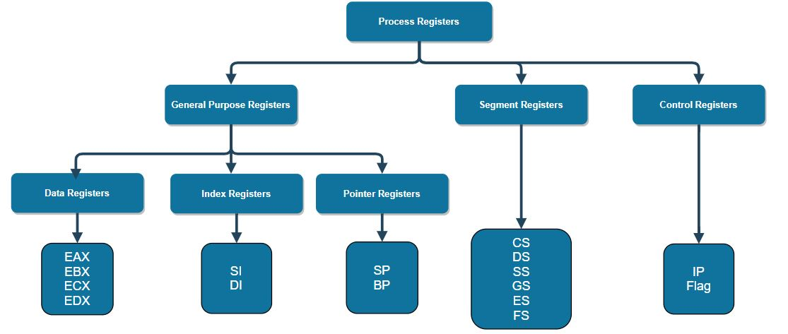
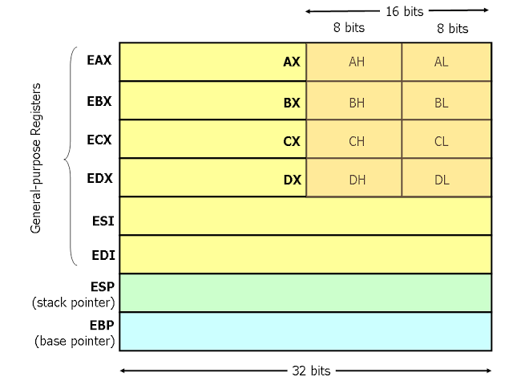

Types of Registers
In Intel x86 32-bit (IA-32) configuration there are ten 32-bit registers, six 16-bit registers and 32-bit Flag and Instruction pointer registers.These may be classified as follows -

1. General Purpose Registers
There are eight 32-bit General purpose registers which are classified in three categories Data register, Index register and Pointer register.
Data Registers
There are four data registers EAX, EBX, ECX,and EDX. These are 32-bit general purpose registers whose lower 16-bits are called AX, BX, CX and DX respectively, which are further classified in two types high and low of 8-bit each.EAX - Extended Accumulator is the primary register used during arithematic
operations.EBX - Extended Base register is used to store address to data.ECX - Extended Counter register is used to store count during iterative
loops.EDX - Extended Data register is used to store data during input/output
operations.
Index Registers
There are two index registers ESI and EDI. These are 32-bit registers. There lower 16-bits are called SI and DI. These are used for indexed addressing and sometimes used in addition and subtraction.ESI - Extended Source Index register is used as a pointer to a source in stream
operations.EDI - Extended Destination Index register is used as a pointer to a destination in
stream
operations.
Pointer Registers
There are two pointer registers ESP and EBP. These are 32-bit registers. There lower 16-bits are called SP and BP. These help in finding the offset value in program stack.ESP - Extended Stack Pointer register points to the top of stack.EBP - Extended Base Pointer register points to the base of stack.
2. Segment Registers
Segments are specific areas defined in a program for containing data, code and stack. These registers point to the start asddress of various segments in memory. There are six 16-bit segment registers.CS - Code Segment register points to the starting address of code area of memory where
the actual
code or instructions of program reside.DS - Data Segment register points to the starting address of data area of memory which
contains data, constants and work areas.SS - Stack Segment register points to the starting address of stack area of
memory.ES, FS and GS are segment registers used to store extra-data.
3. Control Registers
There are two 32-bit control registers IP and flag register.IP - Instruction Pointer stores the offset of memory address of next instruction
to be executed.Flag register - Many instructions involve comparisons and mathematical calculations
and change
the status of the flags and some other conditional instructions test the value of these status flags
to take the control flow to other location.
Some common flag bits are - Overflow flag(OF), Interrupt flag(IF), Sign flag(SF), Zero flag(ZF),
Parity flag(PF), Carry flag(CF), etc.